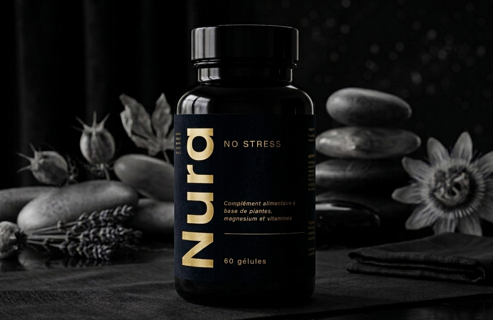

Complexe premium à base de Safran, Rhodiola et Magnésium conçu pour accompagner votre sérénité au quotidien.
Commencer ma cure — 39€
Une fatigue mentale persistante au fil des heures.
Une irritabilité accrue face aux sollicitations.
Une difficulté réelle à relâcher en fin de journée.
Notifications constantes, charge mentale, pression quotidienne… Même lorsque vous vous arrêtez, votre système nerveux reste sollicité.
Ce déséquilibre n’est pas une fatalité — mais il nécessite un soutien adapté.
NURA a été formulé autour de trois actifs reconnus pour leur rôle dans l’équilibre nerveux et émotionnel. Pas de formule inutilement complexe. Pas de promesse excessive. Une base claire, pensée pour s’intégrer durablement dans votre quotidien.
Le safran aide à soutenir l’équilibre émotionnel et accompagne un état d’esprit plus stable au quotidien.
La rhodiola aide l’organisme à mieux s’adapter aux périodes de tension, de pression et de fatigue mentale.
Le magnésium contribue au fonctionnement normal du système nerveux et aide à réduire la fatigue.
39,00€
Paiement 100% sécurisé via Stripe